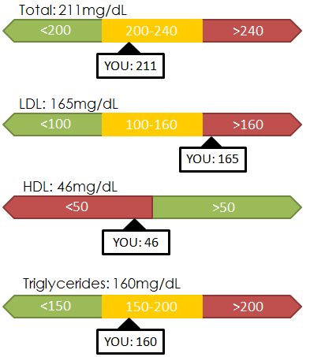
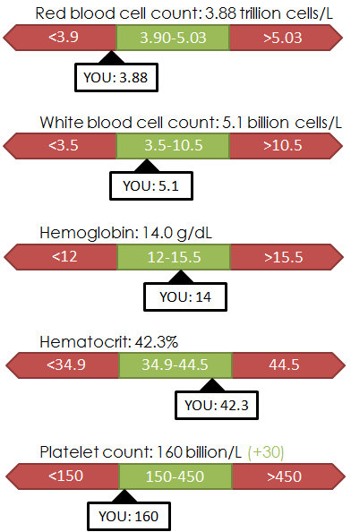

Your Blood Test Results
Cholesterol
What This Means
It is ideal to have cholesterol in the lower (green) range.
It is beneficial to have low HDL ("good" cholesterol) level.
High LDL ("bad" cholesterol) levels can be a potential health hazard.
It is beneficial to have low HDL ("good" cholesterol) level.
High LDL ("bad" cholesterol) levels can be a potential health hazard.
Suggestions
You can reduce your LDL by:
 substituting olive oil for butter
substituting olive oil for butter
taking a walk during lunch
eat fish 2x per week
You can raise your HDL by:
quitting smoking
eating more fiber
substituting olive oil for buttertaking a walk during lunch
eat fish 2x per weekYou can raise your HDL by:
quitting smoking
eating more fiber
Complete Blood Count
What This Means
Red blood cells help deliver oxygen to the body. It is ideal to have a count within the green range.
White blood cells protect the body against infection. It is ideal to have a count within the green range.
White blood cells protect the body against infection. It is ideal to have a count within the green range.
Suggestions
You can raise your RBC count by:
eat leafy greens 3x per week
taking a walk during lunch
You can raise your platelet count by:
taking vitamin supplements
eat leafy greens 3x per weektaking a walk during lunch
You can raise your platelet count by:
taking vitamin supplements